About Our Navigation Equipment
The company has built up its reputation as one of the largest genuine trader/ exporter of marine equipments. We have been in the business since the last decade at Alang Ship Breaking Yard, one of the largest ship breaking yards near Bhavnagar on the west coast of India in Asia. The company is one of the oldest in this trade and has build up quite a reputation through the number of years with the support of our clients by rendering quality goods and services, with the help of our quality management team, sophisticated technical support and prompt delivery schedule.
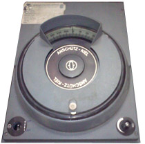
Gyro Compass
High-precision gyro compass for accurate marine navigation and direction finding.
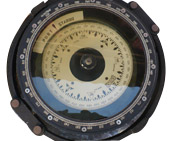
Marine Compass
Traditional marine compass for reliable navigation and course plotting.
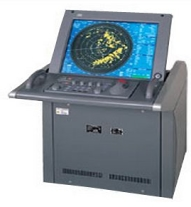
Marine Radar
Advanced radar systems for vessel detection and collision avoidance.
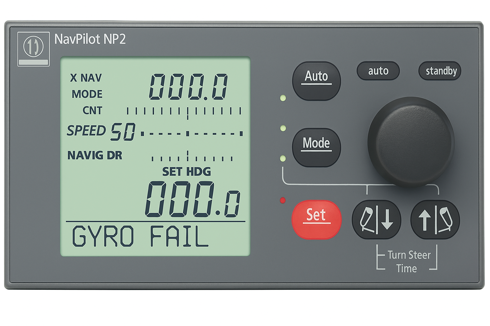
Autopilot System
Automated steering systems for precise course maintenance and fuel efficiency.
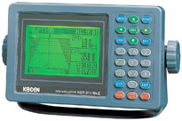
Marine GPS
Global positioning systems for accurate location tracking and navigation.

Echo Sounder
Depth measurement systems for safe navigation in shallow waters.
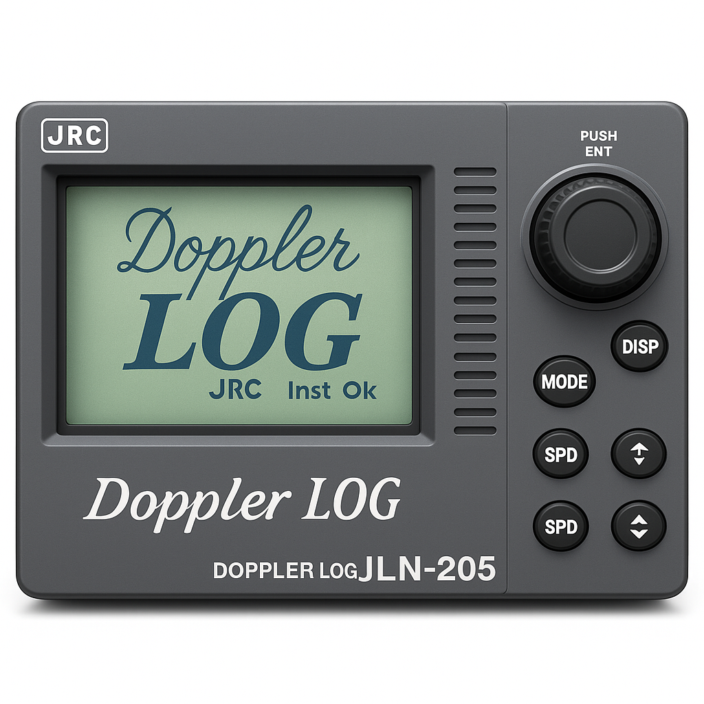
Speed Log
Vessel speed measurement systems for navigation and performance monitoring.
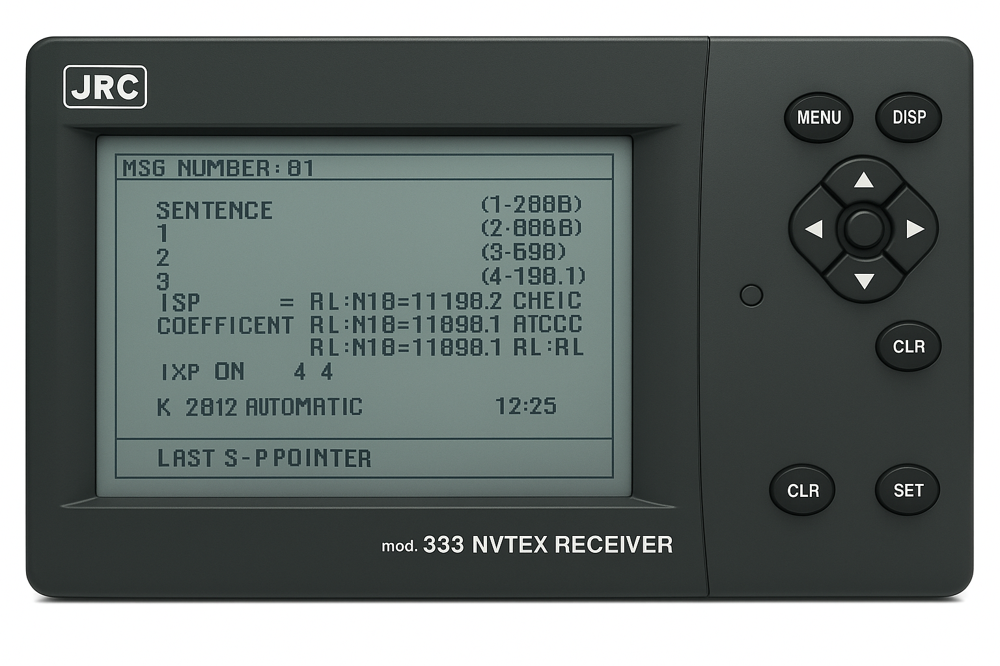
NavNet System
Integrated navigation network for comprehensive marine operations.
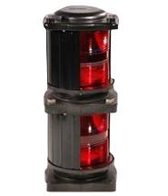
Navigation Lights
Essential lighting systems for vessel visibility and safety compliance.
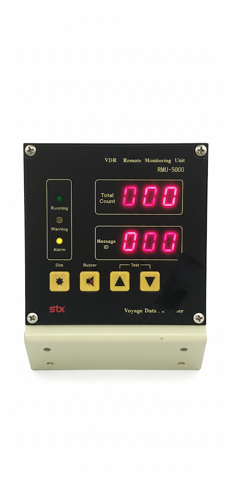
SVDR / VDR Unit
Voyage data recording and monitoring equipment for incident analysis.
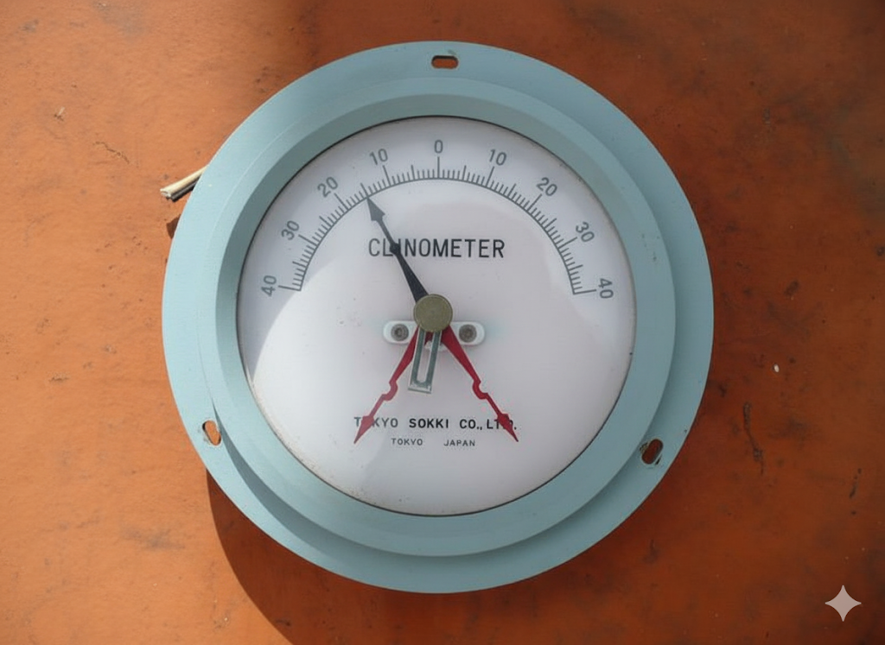
Clinometer
Angle-of-list indicator to monitor vessel heel and stability.
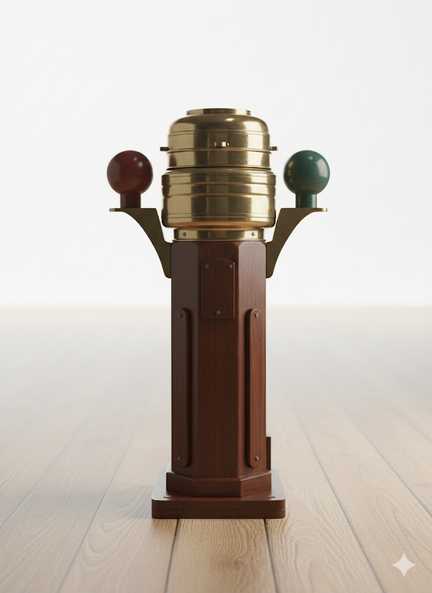
Binnacle Compass
Traditional pedestal-mounted compass with compensating spheres.
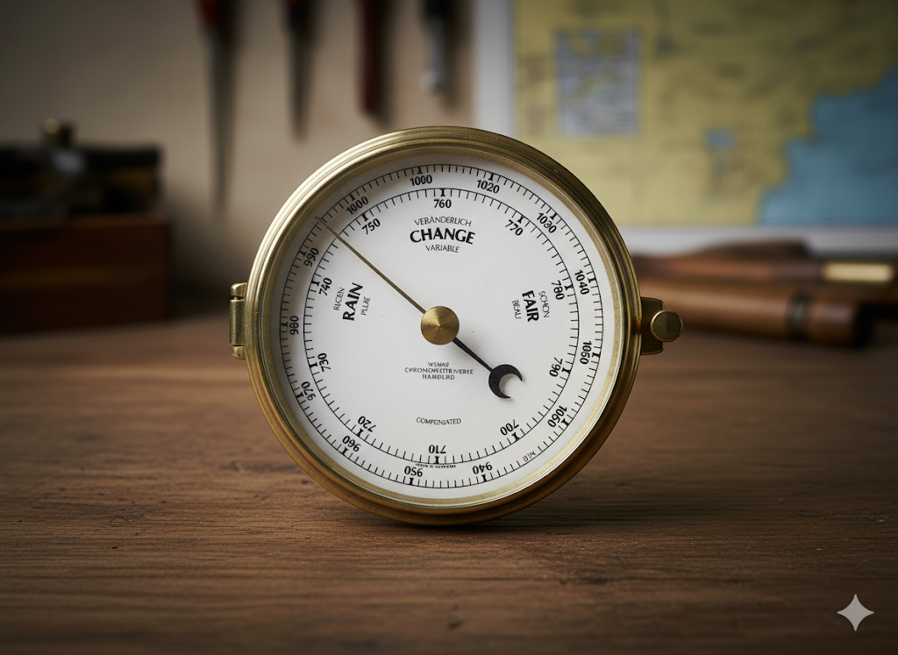
Marine Barometer
Precision barometer for monitoring atmospheric pressure and weather.
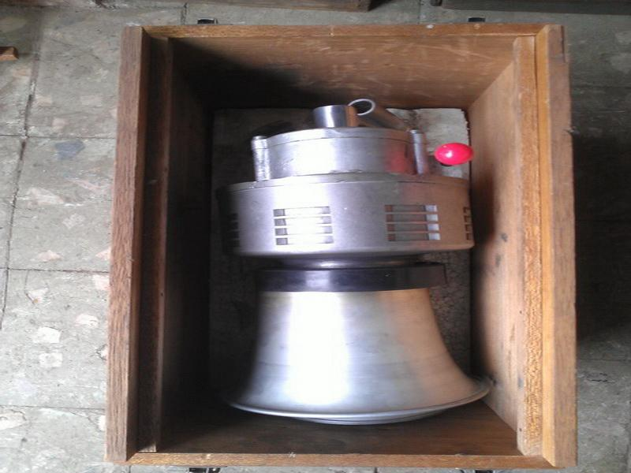
Fog Horn
Fog horn for vessel visibility and safety compliance.ships to signal presence and avoid collisions in low visibility conditions (fog, mist, etc.).
Sunrise Marine Enterprise
Sunrise Marine is your trusted partner for high-quality marine equipment and solutions. With over 25 years of experience, we provide comprehensive marine equipment solutions worldwide.
Our Products
Contact Us
- Email: info@sunrise-marine.com
- Phone: +91 278 2560837
- Bhavnagar, India
- Send Enquiry
- Technical Support
Copyright © All rights reserved | Sunrise Marine